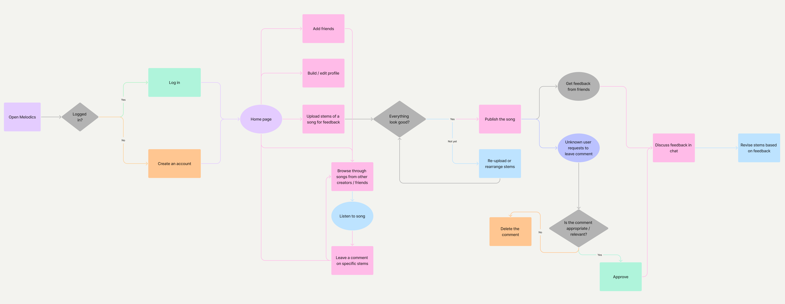

Melodics
April - June 2023 | Santa Cruz, CA
Overview
In my User Experience for Interactive Media (CMPM 131) class at UCSC, I worked in a team of five to design a music producing platform called Melodics that allows artists to create and share their work with friends. Much of the music producing software and applications available today often have overwhelming interfaces and are very complicated to use, which can be discouraging for aspiring producers seeking to start their music journey. Additionally, experienced music producers have limited avenues to safely share their music in production stages and obtain valuable feedback from friends and other musicians. We wanted to address these problems by creating an application that
Research & Insights
To better understand how to help both beginner and experienced music producers, we surveyed people from different backgrounds and asked questions centered around emotions:
What do you feel during your process of making music?
What challenges have you encountered while attempting to make music?
Our survey yielded the following insights:
From these findings, we were able to establish a goal for Melodics: to foster a fun, motivational, and collaborative environment for new and seasoned music producers alike. It would function as a social media website that allows users to not only publish songs in-progress, but also publish them as a collection of individual audio tracks. From there, other users can give feedback by commenting on tracks or communicate with friends privately through direct messages, and ultimately make the production learning process less of a solo journey for those who seek guidance and community.
Design & Usability Testing
To accomplish our goals, we started by creating user personas that represent the sentiments of the people we surveyed and user journey maps to determine the best possible flow and navigation of the application that meets all requirements. From there, we created a user flow diagram that encompasses all of the possible actions the user can take, from creating an account to revising a music stem based on feedback received from other users.
From there, we began our prototyping process by sketching out key frames onto paper, determining color, font, and organizational schemes that best adhered to our goals, and finally turning them into fully-functional, interactive prototypes with Figma, ready for usability testing.
[ insert pictures of sketch and final prototypes ]
We had three participants from varying experience-levels with music production test our high-fidelity prototype. Overall, our styles, color scheme, and design choices generated positive reactions from our participants. However, they sought a better overall cohesion of details (icons and color uses) and more interaction, especially with our chat system and our mascot, Mozart the frog. We further improved our prototype based on this feedback until we achieved a final design that satisfied our goals and requirements. Some of these improvements included creating additional frames/pages relevant to collaboration (friend suggestions, user profiles, etc.), redesigning our mascot to provide usage tips and enhance users' experience, and adjusting our fonts and icons to be more consistent and pleasing to the eye.
High-Fidelity Prototype
What's Next?
Throughout our development of Melodics, we learned a lot about the problems we were trying to address and the intended audience who faces them. The biggest next steps for our product (along with most products similar to ours) would be marketing and advertising. Right now, our application is focused on those who want to familiarize themselves with music production and are looking for feedback to improve upon. Marketing our tool towards this group would help us build a dedicated user-base and also allow us to test and identify problems with scaling and real user interaction.